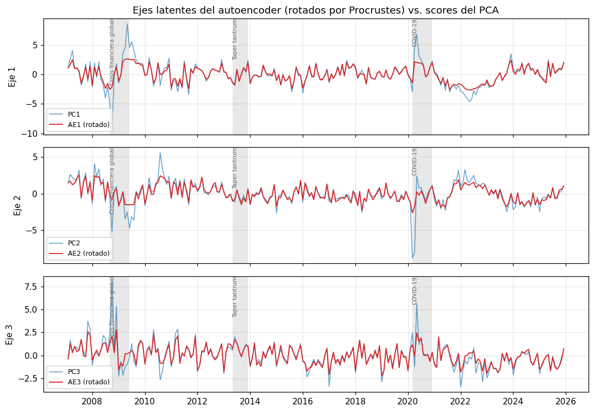

08 · Autoencoders — del PCA lineal a la reducción no lineal
Tesis: Medición del ciclo financiero en Perú mediante técnicas de reducción dimensional y machine learning Autor: Roberto Samaniego Salcedo · Asesor: Dr. Sergio Camiz
Pregunta que responde este notebook: ¿una reducción no lineal (autoencoder) extrae de las 17 series del BCRP una estructura distinta —y útil para el ciclo financiero— respecto de la que ya extrae el PCA de la cadena Camiz?
Diseño (definiciones formales en marco_matematico_ae_lstm.qmd):
Anclaje lineal. Se verifica numéricamente que un autoencoder lineal con pesos atados y pérdida cuadrática genera el mismo subespacio que el PCA (Bourlard & Kamp, 1988; Baldi & Hornik, 1989). Esto garantiza que todo lo que el autoencoder no lineal agregue sea atribuible a la no linealidad, no a una diferencia de definición.
Dimensión latente elegida con el análisis paralelo de Horn (1965), no a priori.
Prueba fuera de muestra del aporte de la no linealidad: validación cruzada por bloques temporales contiguos (no aleatorios), AE vs. PCA con la misma dimensión.
Estabilidad frente a la semilla aleatoria (coeficiente RV entre corridas) y concordancia con el PCA (RV y Procrustes).
Indicadores para el ciclo: factores latentes rotados contra PCA y error de reconstrucción con bandas de Monte Carlo Dropout (Gal & Ghahramani, 2016).
Entrada (solo lectura):data/processed/dataset_transformado_mensual.csv (227 meses × 17 variables, 2007-02 a 2025-12).
Requisito local:pip install torch (versión CPU basta). Las funciones están en notebooks/modelos_dl.py, comentadas en español.
1. Librerías y datos
import os, sys, time, warningswarnings.filterwarnings('ignore')sys.path.insert(0, 'notebooks') if os.path.basename(os.getcwd()) !='notebooks'else sys.path.insert(0, '.')from modelos_dl import*ir_a_raiz_del_repo()sys.path.insert(0, 'notebooks')import numpy as npimport pandas as pdimport matplotlib.pyplot as pltimport matplotlib.dates as mdatesfrom sklearn.decomposition import PCAfrom sklearn.preprocessing import StandardScalerplt.rcParams.update({'figure.dpi': 110, 'axes.grid': True, 'grid.alpha': 0.3})os.makedirs('data/results', exist_ok=True)os.makedirs('reports/figures', exist_ok=True)df = pd.read_csv('data/processed/dataset_transformado_mensual.csv', index_col=0, parse_dates=True)# Nombres cortos para gráficos (se elimina el sufijo de la transformación)nombres = [c.replace('_log_diff', '').replace('_diff', '') for c in df.columns]X = StandardScaler().fit_transform(df.values) # misma estandarización que 05/06n, p = X.shapeprint(f'{n} meses x {p} variables | {df.index.min():%Y-%m} a {df.index.max():%Y-%m}')print(f'Torch {torch.__version__}')
227 meses x 17 variables | 2007-02 a 2025-12
Torch 2.2.2
NoteContinuidad mensual verificada
El dataset mensual cubre 2007-02 a 2025-12 (227 meses × 17 variables). La celda siguiente verifica que el calendario esté completo y detiene la ejecución si falta cualquier mes.
# Verificación de continuidad mensual: no se trabaja con meses faltantescalendario = pd.date_range(df.index.min(), df.index.max(), freq='MS')faltantes = calendario.difference(df.index)print(f'Meses esperados: {len(calendario)} | presentes: {len(df)} | faltantes: {len(faltantes)}')iflen(faltantes):print('Meses faltantes:', ', '.join(f.strftime('%Y-%m') for f in faltantes))
Meses esperados: 227 | presentes: 227 | faltantes: 0
def sombrear_episodios(ax):"""Sombrea los episodios de referencia (solo para validación visual ex post)."""for nombre, (ini, fin) in EPISODIOS_REFERENCIA.items(): ax.axvspan(pd.Timestamp(ini), pd.Timestamp(fin), color='grey', alpha=0.18, lw=0) ax.text(pd.Timestamp(ini), ax.get_ylim()[1], nombre, fontsize=7, va='top', rotation=90, color='dimgrey')
2. Dimensión latente: análisis paralelo de Horn
Se retienen los componentes cuyo autovalor supera el percentil 95 de los autovalores obtenidos con datos gaussianos independientes de igual tamaño (n × p). Es el criterio de retención que la tesis tiene como objetivo firme; aquí fija la dimensión latente del autoencoder con el mismo criterio que se usaría para el PCA.
Se entrena un autoencoder lineal, de una capa, con pesos atados y sin regularización, para d = 1, …, 5. Si la teoría se cumple:
los ángulos principales entre el subespacio del decodificador y el de los primeros d componentes del PCA deben ser ≈ 0°;
el error cuadrático medio de reconstrucción debe coincidir con el del PCA (= 1 − inercia retenida, porque los datos están estandarizados);
las coordenadas del AE no coinciden con los scores del PCA (son una rotación arbitraria de ellos); la SVD dentro del subespacio aprendido (Plaut, 2018 — preprint) recupera las direcciones principales.
Lectura. Con d = 3 la inercia retenida es 50,37 % (la verificación Rcamiz ↔︎ scikit-learn de 07_pca_rcamiz está pendiente de ejecutarse sobre este mismo dataset). El AE lineal alcanza el mismo error y el mismo subespacio (ángulos de centésimas de grado, atribuibles a la tolerancia de optimización), y la SVD interna recupera las direcciones del PCA con |cos| ≈ 1. El autoencoder es, por tanto, una generalización estricta del PCA de la cadena metodológica, no un método ajeno a ella.
4. ¿Aporta la no linealidad? Validación cruzada por bloques temporales
Con n = 227 la pregunta decisiva es si un AE no lineal generaliza mejor que el PCA o solo memoriza. Se divide la muestra en 5 bloques contiguos (no se baraja el tiempo); cada bloque se reconstruye con modelos entrenados en los otros cuatro. La estandarización se recalcula con los datos de entrenamiento de cada pliegue para no filtrar información.
Arquitectura no lineal: 17 → 8 → d, tanh en la capa intermedia, cuello de botella lineal, pesos atados, dropout 0,10, ruido de entrada 0,10 (denoising) y weight decay 10⁻³. Se promedian 3 semillas.
def cv_bloques(df_valores, d, n_bloques=5, semillas=(0, 1, 2), preentreno=False):"""Devuelve MSE fuera de muestra (promedio de pliegues) para PCA y AE no lineal.""" idx = np.array_split(np.arange(len(df_valores)), n_bloques) mse_pca, mse_ae = [], []for prueba in idx: ent = np.setdiff1d(np.arange(len(df_valores)), prueba) sc = StandardScaler().fit(df_valores[ent]) Xe, Xp = sc.transform(df_valores[ent]), sc.transform(df_valores[prueba]) pca_d = PCA(d).fit(Xe) mse_pca.append(np.mean((Xp - pca_d.inverse_transform(pca_d.transform(Xp))) **2)) errs = []for s in semillas: fijar_semillas(s) ae = AutoencoderAtado([p, 8, d], activacion='tanh', dropout=0.10)if preentreno: preentrenar_por_capas(ae, Xe, epocas=1500, lr=1e-2, weight_decay=1e-3, paciencia=150, semilla=s)# 15 % final del entrenamiento como validación para la parada temprana corte =int(len(Xe) *0.85) entrenar(ae, Xe[:corte], Xe[corte:], epocas=3000, lr=5e-3, weight_decay=1e-3, ruido=0.10, paciencia=200, semilla=s) errs.append(error_reconstruccion(ae, Xp).mean()) mse_ae.append(np.mean(errs))return np.mean(mse_pca), np.mean(mse_ae), np.std(mse_ae)t0 = time.time()filas = []for d in [1, 2, 3, 4, 5]: m_pca, m_ae, s_ae = cv_bloques(df.values, d) m_pca2, m_ae_pre, _ = cv_bloques(df.values, d, preentreno=True) filas.append({'d': d, 'mse_pca_fuera_muestra': m_pca, 'mse_ae_tanh': m_ae,'mse_ae_tanh_preentrenado': m_ae_pre,'mejora_ae_vs_pca_%': 100* (m_pca -min(m_ae, m_ae_pre)) / m_pca})cv = pd.DataFrame(filas).set_index('d')print(f'Tiempo: {time.time() - t0:.0f} s')cv.round(4)
Tiempo: 98 s
mse_pca_fuera_muestra
mse_ae_tanh
mse_ae_tanh_preentrenado
mejora_ae_vs_pca_%
d
1
1.4026
1.4682
1.4652
-4.4619
2
1.2285
1.3289
1.3454
-8.1746
3
1.0755
1.2223
1.2578
-13.6477
4
0.8800
1.1662
1.1863
-32.5224
5
0.8041
1.1312
1.1413
-40.6803
fig, ax = plt.subplots(figsize=(7, 3.5))ax.plot(cv.index, cv['mse_pca_fuera_muestra'], 'o-', label='PCA')ax.plot(cv.index, cv['mse_ae_tanh'], 's-', label='AE no lineal (tanh)')ax.plot(cv.index, cv['mse_ae_tanh_preentrenado'], '^--', label='AE no lineal + pre-entrenamiento')ax.axvline(d_horn, color='crimson', ls=':', label=f'd de Horn = {d_horn}')ax.set_xlabel('Dimensión latente d'); ax.set_ylabel('MSE fuera de muestra (bloques)')ax.set_title('Error de reconstrucción fuera de muestra: PCA vs. autoencoder'); ax.legend()plt.tight_layout(); plt.savefig('reports/figures/08_cv_pca_vs_ae.png'); plt.show()
Se fija d = 3 para mantener comparabilidad directa con los tres ejes retenidos del PCA (ver la discusión sobre Horn en las conclusiones). Se entrenan 10 réplicas con semillas distintas sobre toda la muestra y se mide:
RV entre réplicas: si la geometría de la nube latente depende de la semilla, el modelo no es interpretable;
RV con los scores del PCA: cuánto de la configuración no lineal ya está en el PCA.
D_FINAL =3corte =int(n *0.85)replicas, codigos = [], []for s inrange(10): fijar_semillas(100+ s) ae = AutoencoderAtado([p, 8, D_FINAL], activacion='tanh', dropout=0.10) entrenar(ae, X[:corte], X[corte:], epocas=3000, lr=5e-3, weight_decay=1e-3, ruido=0.10, paciencia=200, semilla=100+ s) ae.eval()with torch.no_grad(): codigos.append(ae.codificar(a_tensor(X)).numpy()) replicas.append(ae)scores_pca = PCA(D_FINAL).fit_transform(X)rv_entre = [coeficiente_rv(codigos[i], codigos[j]) for i inrange(10) for j inrange(i +1, 10)]rv_pca = [coeficiente_rv(c, scores_pca) for c in codigos]mse_full = [error_reconstruccion(m, X).mean() for m in replicas]estab = pd.Series({'RV entre réplicas (mediana)': np.median(rv_entre),'RV entre réplicas (mínimo)': np.min(rv_entre),'RV réplica vs PCA (mediana)': np.median(rv_pca),'MSE en muestra AE (mediana)': np.median(mse_full),'MSE en muestra PCA': np.mean((X - PCA(D_FINAL).fit(X).inverse_transform(scores_pca)) **2)})estab.round(4)
RV entre réplicas (mediana) 0.9387
RV entre réplicas (mínimo) 0.8718
RV réplica vs PCA (mediana) 0.8176
MSE en muestra AE (mediana) 0.5874
MSE en muestra PCA 0.4963
dtype: float64
Se elige como representativa la réplica con mayor RV promedio respecto de las demás (la más “central” de la distribución de soluciones), en vez de la de menor error, para no premiar una solución atípica.
rv_mat = np.ones((10, 10))for i inrange(10):for j inrange(10):if i != j: rv_mat[i, j] = coeficiente_rv(codigos[i], codigos[j])central =int(np.argmax(rv_mat.mean(axis=1)))ae_final = replicas[central]Z = codigos[central]# Rotación de Procrustes contra los scores del PCA: hace los ejes comparables e interpretablesZ_rot, R = rotar_procrustes(Z, scores_pca)print(f'Réplica central: {central} | RV con PCA: {coeficiente_rv(Z, scores_pca):.3f}')corr_ejes = pd.DataFrame(np.corrcoef(Z_rot.T, scores_pca.T)[:D_FINAL, D_FINAL:], index=[f'AE{i+1} (rotado)'for i inrange(D_FINAL)], columns=[f'PC{i+1}'for i inrange(D_FINAL)]).round(3)corr_ejes
Réplica central: 5 | RV con PCA: 0.821
PC1
PC2
PC3
AE1 (rotado)
0.925
0.023
0.087
AE2 (rotado)
0.022
0.873
0.065
AE3 (rotado)
0.078
0.059
0.905
5.1 Interpretación de los ejes latentes
Para un AE no lineal no existen “cargas” constantes. Se usa la correlación entre cada variable original y cada eje latente rotado (análogo al círculo de correlaciones del PCA), que es la lectura habitual en la tradición del análisis de datos.
fig, axes = plt.subplots(D_FINAL, 1, figsize=(10, 7), sharex=True)for i, ax inenumerate(axes): ax.plot(df.index, scores_pca[:, i], color='tab:blue', lw=1, alpha=0.7, label=f'PC{i+1}') ax.plot(df.index, Z_rot[:, i], color='tab:red', lw=1.2, label=f'AE{i+1} (rotado)') ax.set_ylabel(f'Eje {i+1}'); ax.legend(loc='lower left', fontsize=8) sombrear_episodios(ax)axes[0].set_title('Ejes latentes del autoencoder (rotados por Procrustes) vs. scores del PCA')plt.tight_layout(); plt.savefig('reports/figures/08_ejes_latentes.png'); plt.show()

6. Error de reconstrucción como indicador de anomalía estructural
Un mes con error de reconstrucción alto es un mes que no se ajusta a la estructura de covariación típica aprendida por el modelo: candidato a episodio de estrés o a cambio de régimen. La incertidumbre se cuantifica con Monte Carlo Dropout (T = 300 pasadas estocásticas con dropout activo).
Advertencia: este error es en muestra (el modelo vio esos meses). La versión estrictamente fuera de muestra, con validación walk-forward, está en 09_lstm_autoencoder.
7. Contraste con las transiciones detectadas por EPCA
Las transiciones candidatas de 06_epca (caídas de la correlación entre cargas de PC1 de ventanas sucesivas) se superponen al error de reconstrucción del AE. La coincidencia temporal entre dos métodos independientes es evidencia más fuerte que cualquiera aislado; la discrepancia también es informativa.
trans = pd.read_csv('data/results/06_epca_transiciones_detectadas.csv', parse_dates=['fecha_transicion_candidata'])umbral_err = err['error_ae'].quantile(0.90)filas = []for f in trans['fecha_transicion_candidata']: ventana = err.loc[f - pd.DateOffset(months=6): f + pd.DateOffset(months=6), 'error_ae'] filas.append({'transicion_epca': f.strftime('%Y-%m'), 'error_ae_max_±6m': ventana.max(),'mes_del_max': ventana.idxmax().strftime('%Y-%m'),'supera_p90': bool(ventana.max() > umbral_err)})contraste = pd.DataFrame(filas)print(f'Umbral p90 del error AE: {umbral_err:.3f}')contraste.round(3)
Umbral p90 del error AE: 0.930
transicion_epca
error_ae_max_±6m
mes_del_max
supera_p90
0
2013-05
0.601
2013-10
False
1
2017-11
2.043
2018-04
True
2
2018-02
2.043
2018-04
True
8. Guardar resultados
salida = pd.DataFrame(Z_rot, index=df.index, columns=[f'AE{i+1}_rotado'for i inrange(D_FINAL)])salida = salida.join(err)salida.to_csv('data/results/08_ae_factores_y_error.csv')interp.to_csv('data/results/08_ae_correlaciones_variables.csv')pd.concat([estab.rename('valor')]).to_csv('data/results/08_ae_estabilidad.csv')contraste.to_csv('data/results/08_ae_contraste_epca.csv', index=False)torch.save(ae_final.state_dict(), 'data/results/08_ae_modelo_final.pt')print('Resultados guardados en data/results/08_ae_*')
Resultados guardados en data/results/08_ae_*
9. Conclusiones (dataset mensual: 227 meses)
Anclaje confirmado. El autoencoder lineal atado reproduce el PCA: MSE idéntico para d = 1…5, ángulos principales ≤ 0,21° y direcciones recuperadas con |cos| ≥ 0,99999. Con d = 3 la inercia es 50,37 %; falta la verificación Rcamiz ↔︎ scikit-learn sobre este mismo dataset.
Contradicción a resolver: Horn retiene 4 dimensiones, no 3 (PC4: 1,466 > 1,304; inercia 59,0 %). Decidir con el asesor el criterio de retención antes de fijar d en 05, 06 y 07.
La no linealidad no mejora la reconstrucción fuera de muestra. El AE no lineal es peor que el PCA para todo d (−4 % con d = 1, −14 % con d = 3, −41 % con d = 5); el pre-entrenamiento no lo corrige. Con 227 meses, la parsimonia favorece al PCA como compresor.
No estacionariedad estructural. El MSE fuera de muestra del PCA con d = 3 (1,08) supera la varianza total por variable: la estructura de un bloque temporal no se transfiere a otro.
Estabilidad frente a la semilla. RV mediano entre réplicas 0,94 (mínimo 0,87) y con el PCA 0,82. Los ejes rotados correlacionan entre 0,87 y 0,93 con PC1–PC3: el AE es una versión deformada del PCA, no una estructura distinta.
El valor del AE está en la detección de anomalías. En muestra, oct-2008 tiene error 7,0 (AE) frente a 1,0 (PCA), dominado por el EMBI: el AE señala la crisis global que EPCA no puede validar por efecto de borde. Las transiciones EPCA de 2017-11 y 2018-02 coinciden con el pico de error del AE en abr-2018 (crédito hipotecario). La transición EPCA de 2013-05 (taper tantrum) no aparece en el error del AE: es un cambio de estructura que el AE reconstruye bien, coherente con que EPCA mide reconfiguración y el AE mide atipicidad.
La validación estrictamente fuera de muestra del indicador está en 09_lstm_autoencoder.